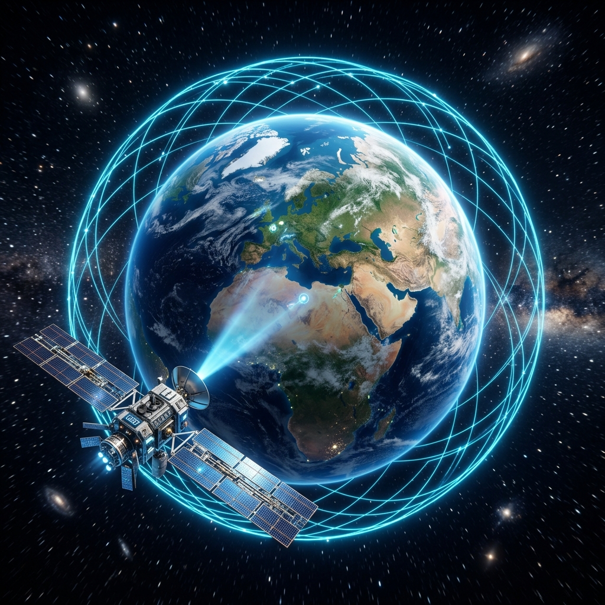
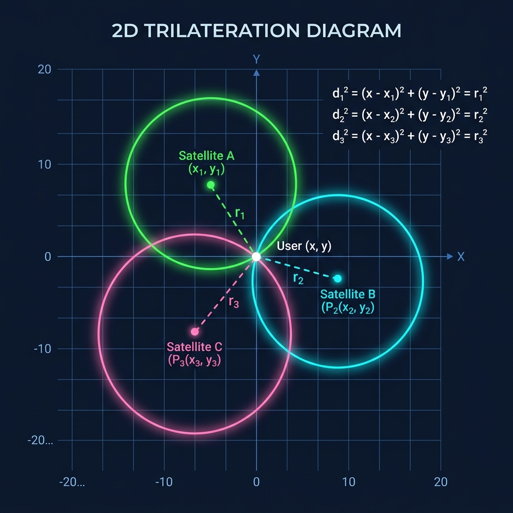

Como a Geometria Analítica e a Relatividade tornam o posicionamento global possível.
Ao contrário do que muitos pensam, o GPS não usa Triangulação, mas sim Trilateração:
O seu receptor (celular) calcula a distância até cada satélite medindo o tempo que o sinal eletromagnético leva para viajar da órbita até a Terra na velocidade da luz.

Mova os satélites abaixo (arrastando com o mouse ou toque) e veja como a interseção dos raios de sinal (circunferências) determina a sua localização exata.
A localização é baseada no cálculo de distâncias. Se conhecemos as coordenadas tridimensionais de um satélite \((x_i, y_i, z_i)\) e a distância \(d_i\) até ele, o usuário \((x, y, z)\) deve pertencer à superfície de uma esfera definida pela equação:
Calcula a reta direta entre o satélite e o receptor celular.
Define a "bolha" de posições possíveis ao redor de um único satélite.
Resolver um sistema de equações quadráticas (esferas) é difícil e pesado para chips de celulares. Mas existe um truque matemático genial da Geometria Analítica:
Ao subtrair as equações de duas esferas, os termos quadráticos \(x^2\), \(y^2\) e \(z^2\) se cancelam mutuamente!
Por exemplo, em 2D, a subtração das equações de dois círculos resulta na equação de uma reta (o Eixo Radical) que passa pelas interseções:
Esse processo transforma um problema quadrático complexo em um **Sistema Linear simples** (do tipo \(Ax = B\)), resolvido em microssegundos por matrizes!

Como o sinal viaja à velocidade da luz (\(300.000\text{ km/s}\)), qualquer erro de 1 microssegundo no relógio resulta em um erro de 300 metros na Terra!
Os relógios atômicos dos satélites sofrem efeitos descritos pelas teorias de Einstein:
A compensação líquida de **+38 microssegundos** por dia é corrigida matematicamente nos algoritmos do GPS. Sem isso, o GPS falharia por mais de **10 km todos os dias**!
Além das equações, a precisão depende de como os satélites estão distribuídos no céu:
É por isso que seu celular sempre escolhe satélites espalhados em direções opostas no horizonte.
Este aplicativo demonstra a aplicação prática da matemática escolar. Ao mapear o pátio da nossa escola e registrar as coordenadas cartesianas dos alunos em tempo real via internet, mostramos como a matemática está viva em tecnologias que usamos todos os dias.